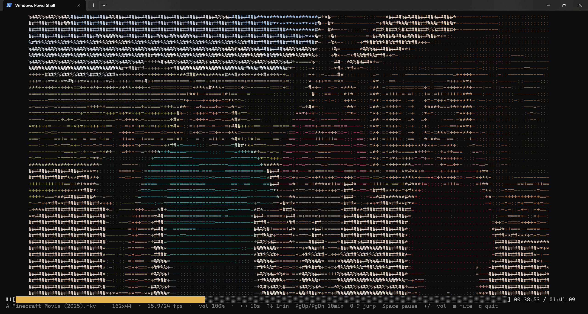

VideoToASCII plays a video directly in your terminal with 24-bit color, synchronized sound, a progress bar and keyboard seeking.

Each character keeps the exact color of the pixels it replaces, chosen by brightness from .:-=+*#%@.
The video follows the audio clock and drops frames when rendering falls behind, so picture and sound never drift.
Drawn with box-drawing characters at 1/8-cell precision, with elapsed and total time.
Seek by 10 seconds, 1 minute or 10 minutes, jump to any tenth of the video, pause and change the volume.
The picture fits the terminal and keeps its aspect ratio, even when you resize the window mid-movie.
Each frame is turned into ANSI escape codes with array operations, with no per-character Python loop.
Clone the repository and install the dependencies.
git clone https://github.com/exnc/VideoToASCII.git
cd VideoToASCII
pip install -r requirements.txt
Recent Debian, Ubuntu and WSL systems block pip install into the system Python
(PEP 668), so use a virtual environment.
sudo apt install python3-venv libportaudio2
git clone https://github.com/exnc/VideoToASCII.git
cd VideoToASCII
python3 -m venv .venv
source .venv/bin/activate
pip install -r requirements.txtsource .venv/bin/activate again in each new terminal.
libportaudio2 is needed for sound; without it, the video plays silently.
| Package | Purpose | |
|---|---|---|
numpy | Frame processing and ANSI encoding | required |
opencv-python | Video decoding | required |
av | Audio decoding | optional |
sounddevice | Audio output | optional |
# Play a video
python video_ascii.py movie.mkv
# "+" characters only
python video_ascii.py movie.mkv --chars "+"
# Smaller, looping, half volume
python video_ascii.py clip.mp4 --width 120 --loop --volume 50| Option | Description |
|---|---|
--chars "+" | Characters from darkest to brightest (default .:-=+*#%@). A single character gives a uniform look. |
--width N | Maximum width in columns (cannot exceed the terminal width). |
--loop | Loop playback. |
--quant N | Color quantization step: higher means less output and a smoother frame rate (default 4, 1 = none). |
--boost X | Color brightness multiplier. |
--volume N | Initial volume in % (0-200, default 100). |
--mute | Start muted. |
--no-audio | Do not play sound. |
| ←→ | Back / forward 10 seconds |
| ↑↓ | Forward / back 1 minute |
| PgUpPgDn | Forward / back 10 minutes |
| HomeEnd | Start / end of the video |
| 0 – 9 | Jump to 0%, 10%, … 90% |
| Space | Pause / resume |
| +- | Volume up / down |
| m | Mute / unmute |
| qEsc | Quit |
Each character is one terminal cell, so detail is limited by the number of columns and lines. Make the font smaller (Ctrl + - in Windows Terminal) or go full screen (F11). Ctrl + 0 resets the scaling.
A larger picture means more text for the terminal to draw.
Try --quant 8 or a smaller --width.